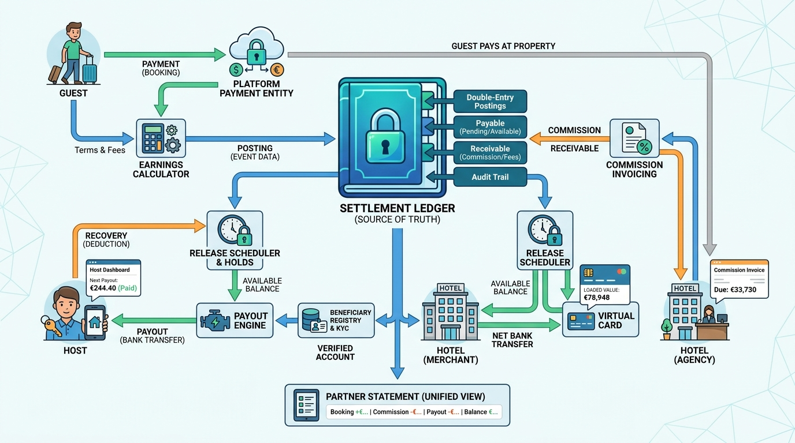

Part VI — MONEY: Who Pays Whom, When and How Much
Paying the Supply Side: Payouts, Commissions and Settlement

Image generated by Google Gemini (gemini-3-pro-image-preview)
Part VI — MONEY: Who Pays Whom, When and How Much

Image generated by Google Gemini (gemini-3-pro-image-preview)